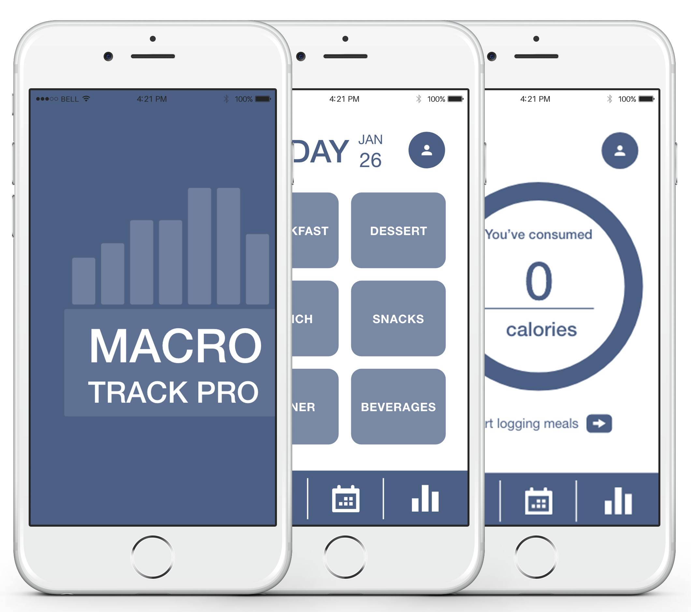
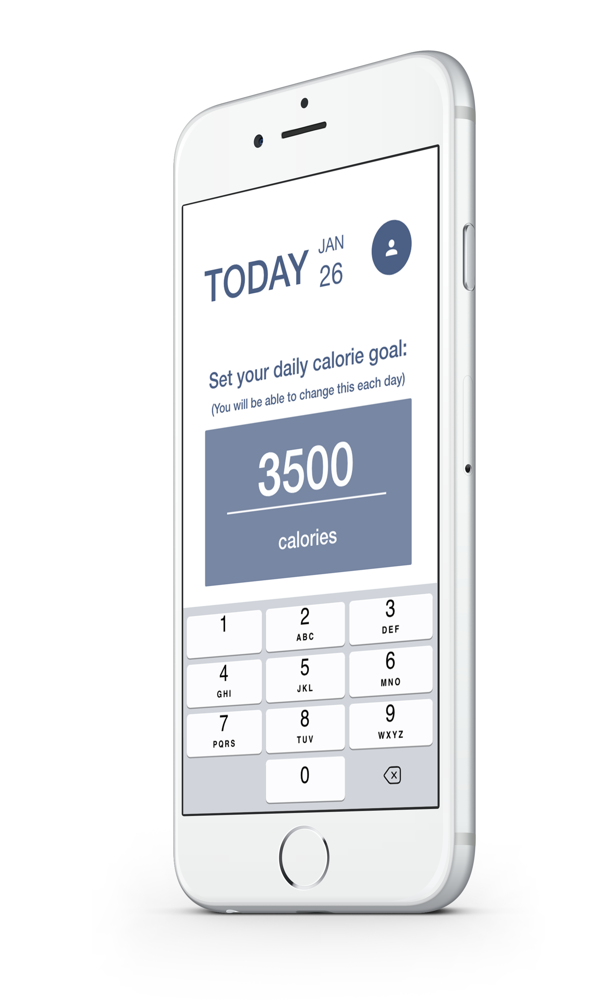
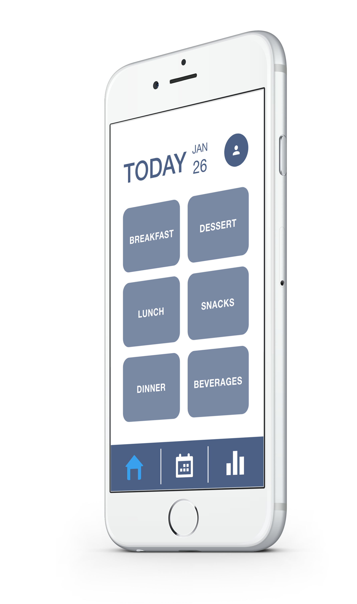
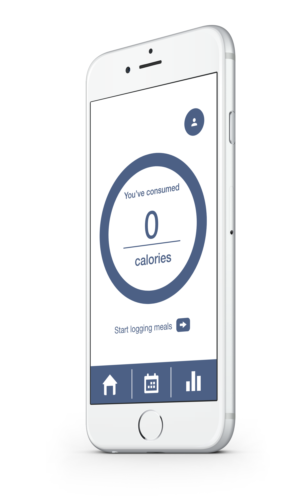

Set your goals.
Do you want to lose, gain or maintain weight?
Each day you enter the app you can adjust the number of calories you wish to consume for the day.

Track your progress.
Enter each meal you eat throughout the day using the meal search or by manually entering the nutritional information.
Have a meal you tend to eat quite often? Save it to your favorites so you can easily add it to your eating log in the future.
You also can edit or remove meals from your log.

Train like a PRO.
View how close you are to reaching your daily calorie intake with simple graphs that fill up as you get closer to your goal.
Receive custom notifications throughought the day to remind yourself how many more calories you have left.

Is MACRO TRACK PRO available for Android?
Not yet, but we are surely working hard to bring MACRO TRACK PRO to Google Play as soon as possible!
Will I be able to edit my overall weight goal if I no longer want to be eating in a deficit?
Yes! You can always change your weight goals by visiting your profile page.